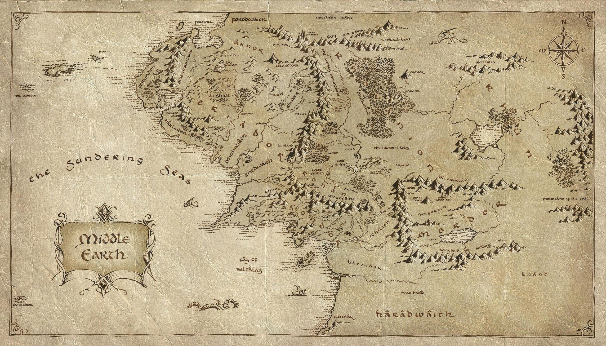

Карта средиземья

К карте
Все элементы
Изенгард
Изенгард (англ. Isengard , «железная крепость») — крепость в долине Нан-Курунир на южной оконечности Мглистых гор, одна из главных в Средиземье. Слово «Изенгард» является переводом на язык рохиррим синдаринского Ангреност (синд. Angrenost, «железный город/цитадель»)[2].
Изенгард был частично естественным горным образованием, а частично творением рук нуменорцев. Крепость была опоясана кольцом каменных стен высотой не более 100 футов (около 30 метров) с единственными воротами, расположенными на юге. От ворот дорога вела к бродам на реке Изен. Внутреннее пространство представляло собой окружность диаметром в милю, изначально наполненную зеленью, фруктовыми деревьями, которые питались от потоков, сбегавших с гор к озеру, но во времена владычества Сарумана зелени уже не было. В центре кольца стояла башня Ортханк высотой более 500 футов (около 150 метров), одна из трех важнейших башен Гондора (две другие находились в Минас Аноре и Минас Итиле).
Крепость была построена нуменорцами «во дни их могущества» и была частью Гондора, вместе с землями Каленардона. Даже после передачи этих земель народу Эорла Изенгард оставался крепостью Гондора, охраняемой гондорской стражей во главе с Капитаном (этот титул передавался по наследству), а ключи от Ортханка хранились у Наместника Гондора. Двумя милями южнее ворот Изенгарда была плотина и внешняя ограда, тянувшаяся между холмами, которыми заканчивались Мглистые горы. Внутри этой ограды были возделанные земли людей крепости.
Когда Гондор ослабел, Изенгард, охранявший проход между Белыми и Мглистыми горами, пришлось оставить. В 2710 г. Третьей Эпохи крепость была занята дунландцами, но уже в 2759 г. они были выбиты оттуда, и в том же году Саруман пришел к Рохиррим с дарами и занял Изенгард с разрешения Берена, Наместника Гондора. От него же Саруман получил ключи от Ортханка. С тех пор долину Изенгарда стали называть Нан-Курунир.
Таким образом изначально Саруман был лишь командиром людей Гондора, формально подчиняющимся Наместнику. Но в 2953 г. он объявил Изенгард своей собственностью и начал укреплять его, произведя большие перестройки. Именно тогда рощи были срублены, а пруд осушён и засыпан. В крепостных стенах пробили многочисленные туннели, которые стали казармами для армии Сарумана. Кузницы и прочие мастерские располагались под землёй. Примерно в это же время в Мордоре был вновь отстроен Барад-Дур.
В 3019 г., после того, как Саруман потерпел поражение в войне с Роханом, энты затопили внутреннее пространство водами Изена, а затем разрушили кольцевую стену. Ортханк разрушить не удалось. Договорившись с главой энтов Древобородом, Саруман покинул башню, отдав ключи от неё, которые были затем переданы Арагорну. Впоследствии Арагорн передал всю долину, кроме Ортханка, в ведение энтов с условием присматривать за башней. Затем на месте Изенгарда был разбит сад, через который протекала река, впадая в озеро, окружавшее Ортханк.